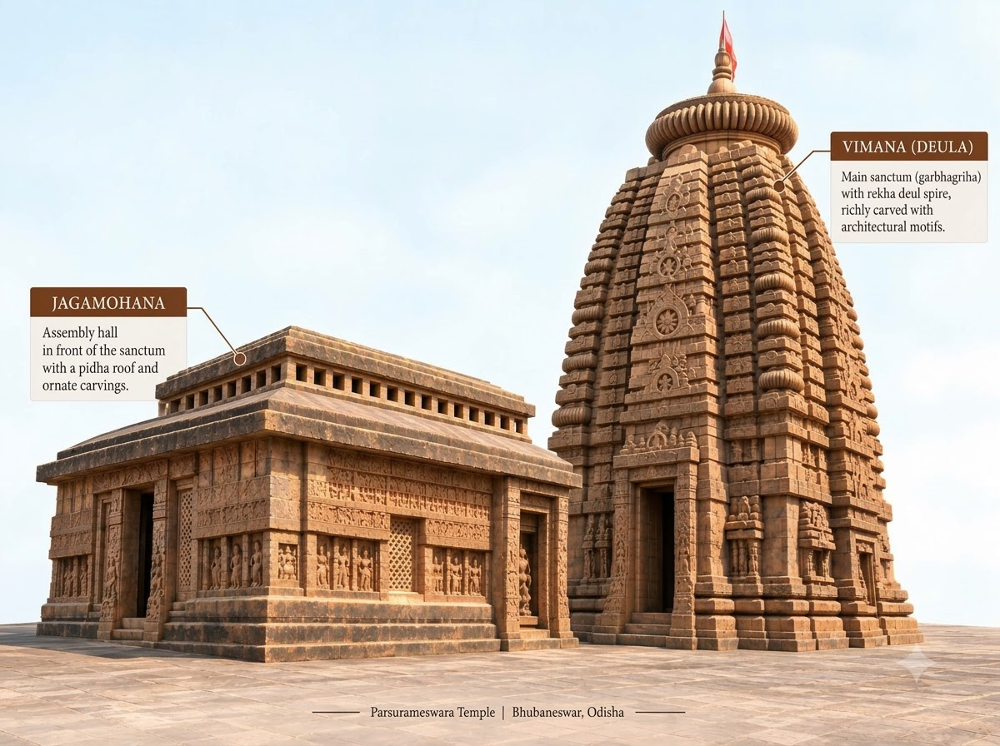
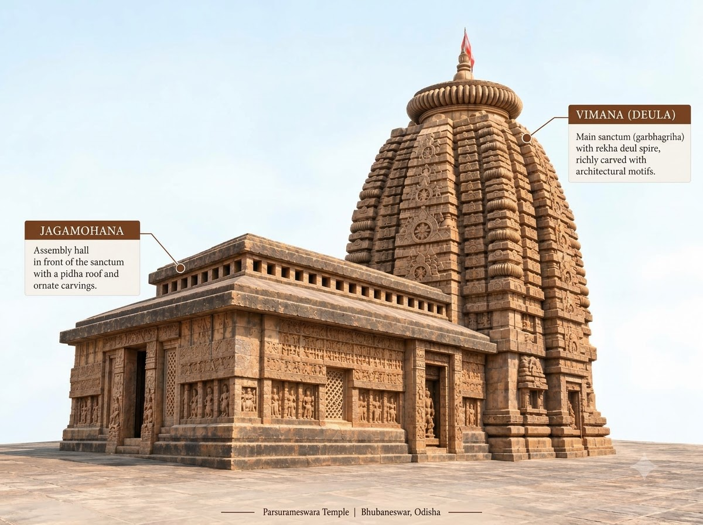
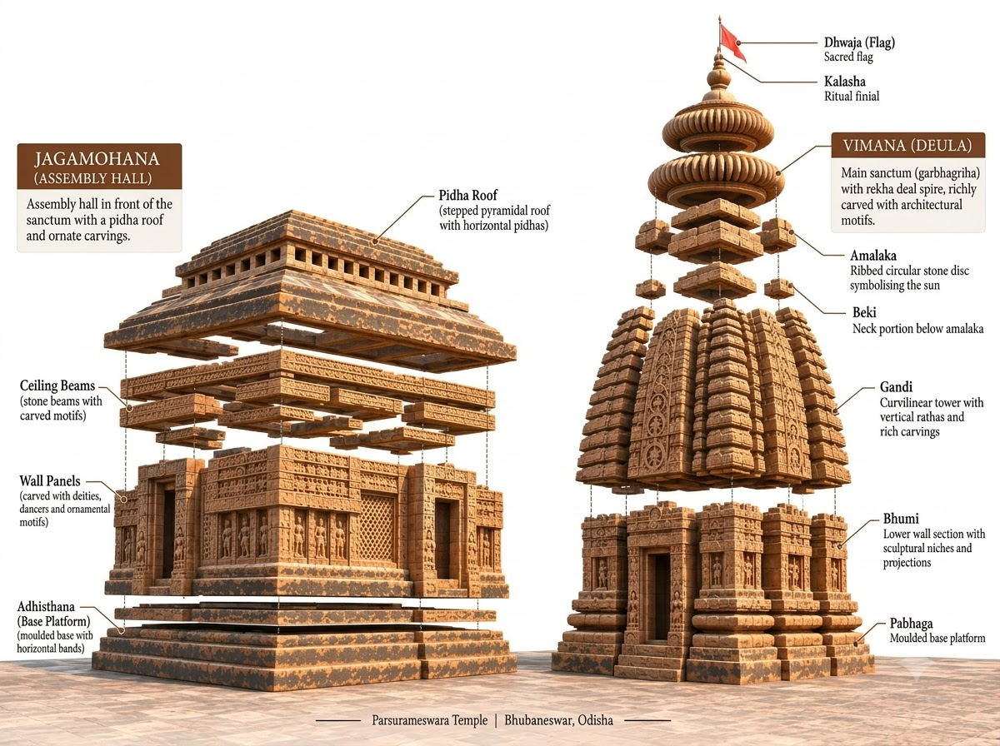

Meet the temple! It has just two parts. First comes the holy room, or sanctuary (deul), with its tower. In front of it stands a hall with pillars, the porch hall (jagamohana). Now look at the foot of the wall. Its base (pabhaga) is made of three shaped bands of stone, called mouldings.

Bhubaneswar
Parasuramesvara Temple
It is small, but it is richly carved and one of the oldest temples still standing in Bhubaneswar. Every stone has something to teach us.
For curious grown-ups
Brown (1959) and Fergusson (1876) each call it the oldest temple in Bhubaneswar; Brown says he judged 'mainly from its appearance'. Panigrahi (1961) dates the ruined Satrughnesvara earlier, so we say 'one of the oldest'.
Stop 1 of 4
Meet the temple

- When?
c. 7th–8th century CE
How do we know?
No carved record tells us the year it was built. Experts read the clues in its style and in the shapes of its carved letters. It is more than 1,100 years old, and maybe close to 1,400. Experts still wonder exactly when it was built.
No building inscription is known, so every date comes from style or letter shapes. Panigrahi (1961) said about 650 CE; Brown (1959) towards the end of the 8th century; R.D. Banerji (reported by Panigrahi) not before the 8th century, from the planet labels on the door. Older writers said about 500 CE (Fergusson, 1876) and the 9th century (Mitra, 1880).
- In whose time?
Shailodbhava period
How do we know?
It may come from the days when the Shailodbhava kings ruled this area. But no one knows who had it built.
Panigrahi (1961) placed it in Shailodbhava times, based on his own date of about 650 CE, but wrote that we do not know whether any Shailodbhava ruler built temples here. Fergusson (1876) thought it 'may belong to the preceding dynasty', before his Kesari kings.
- For which god?
Shiva or Vishnu
How do we know?
Look closely at its walls. Some carvings tell stories from the life of the god Shiva. Still, experts have not always agreed whether the temple was made for Shiva or for Vishnu.
Panigrahi (1961) notes carvings of scenes from Shiva's life. Mitra (1880) reports that the Ekamra Purana names its god Daityesvara. Fergusson (1876) judged it a Vishnu temple from its name and its wall carvings.
- Temple type?
- Not yet verified — see our content policy.
- Parasuramesvara Temple: about 13 m (44 ft)
- An adult person: about 1.7 m
- A five-storey building: about 15 m (an assumed height, shown for scale)
About as tall as a five-storey building.
Stop 2 of 4
How it was built

Imagine building a temple from big, heavy stones with no cement at all. That is how this one was made! Each stone stays in place by its own weight and careful balance. Edges that lock into each other help hold them together.
The builders knew a clever trick. Over a doorway, they stepped stones inwards to make a hollow arch. The empty space kept heavy weight off the stone beams above the door. You can see such an arch in the ruins of an old temple built the same way as this one.
For curious grown-ups
Panigrahi (1961) describes this corbelled arch at the ruined Satrughnesvara, which he says was built the same way as Parasuramesvara. He and N.K. Bose both see it as a way to take weight off the door beams, though they differ on exactly which part it protects.
In 1903 the temple had a big repair. Sadly, the work disturbed much of the old roof inside the holy room. Even so, some of its first shape still survives.
For curious grown-ups
Panigrahi (1961) says the Public Works Department repaired it thoroughly in 1903.
Stop 3 of 4
The parts

-
Part 1 of 3
Jagamohana
What it means: not yet verified — see our content policy.Step up to the porch hall. It has lasted well, so it shows us what early porch halls looked like. Its middle roof is raised higher than the rest. Stone windows, carved with holes, let the daylight in.
For curious grown-ups
The sources give different numbers of doors for the hall (Panigrahi two, Brown three), so no count is given here.
Of all the early temples still in fair shape, this one has the most carvings. High on the porch hall, rows of horses and elephants march along in a parade. Lower down, other panels tell stories of the gods.
For curious grown-ups
Mitra (1880) reads the lower porch panels as scenes from Rama's life; Panigrahi (1961) speaks of scenes from Shiva's life. They may be describing different panels.
-
Part 2 of 3
Bada
What it means: not yet verified — see our content policy.Look at the doorway of the holy room. A carved stone slab shows the planet gods, each with its name cut into the stone beside it. But one is missing! Ketu, the ninth planet god, is left out. Later temples, such as Mukteshvara, added him.
For curious grown-ups
Panigrahi (1961) notes that Ketu is absent from the planet slabs of all the early temples up to the end of the 9th century.
-
Part 3 of 3
Gandi
What it means: not yet verified — see our content policy.Now look up at the tower. It is short and sturdy, with heavy shoulders. On top sits a very wide crowning stone with ribs around it. The tower's shape is simple, like a first draft.
For curious grown-ups
Percy Brown (1959) called the tower 'thick-set and heavy-shouldered', with an 'immensely wide' ribbed crowning stone, and its shape 'rudimentary'.
Stop 4 of 4
Its family
This temple and another old one, the Vaital Deul, are like a first lesson book made of stone. They show how the Odisha style of temple began. Later porch halls had only one door and were darker inside.
For curious grown-ups
Percy Brown (1959) called the two temples a stone 'primer on the beginnings of the Orissan mode'.
It has close cousins too. At least two damaged temples in Bhubaneswar closely match it. One, the ruined Bharatesvara, has a similar tower and almost the same carvings on its front.
Builders may have shared ideas with other parts of India. Its tower and raised hall roof have been compared with slightly older temples at Aihole, in the Deccan. Flat pillars on its walls are topped with a carved pot and leaves, a design linked with the Gupta style of the north.
For curious grown-ups
Percy Brown (1959) made the Aihole comparison and the Gupta link, suggesting only that ideas may have been shared. Mitra (1880) thought the raised hall roof came instead from Buddhist monastery halls.
Sources & evidence
- Established: old records (inscriptions, digs, ASI/UNESCO) say so, and experts agree. Established: old records (inscriptions, digs, ASI/UNESCO) say so, and experts agree.
- Scholarly view: experts' best reading of the clues. Scholarly view: experts' best reading of the clues.
- Debated: sources disagree, or it rests on tradition. Debated: sources disagree, or it rests on tradition.
- Percy Brown. Indian Architecture (Buddhist and Hindu Periods), D.B. Taraporevala Sons & Co., Bombay (1959). https://archive.org/details/dli.csl.8666 (full text, archived copy)
- Nirmal Kumar Bose. Canons of Orissan Architecture, R. Chatterjee, Calcutta (1932). https://archive.org/details/in.ernet.dli.2015.100340 (full text, archived copy)
- Krishna Chandra Panigrahi. Archaeological Remains at Bhubaneswar, Orient Longmans, Bombay (1961). https://archive.org/details/in.ernet.dli.2015.111041 (full text, archived copy)
- Rajendralala Mitra. The Antiquities of Orissa, Vol. II, W. Newman & Co., Calcutta (published under orders of the Government of India) (1880). https://archive.org/details/in.ernet.dli.2015.44126 (full text, archived copy)
- James Fergusson. History of Indian and Eastern Architecture, John Murray, London (1876). https://archive.org/details/in.ernet.dli.2015.62030 (full text, archived copy)
Still being checked: temple type.